Improving Lemmy (PostgreSQL) Performance
This article is a mix of a report of things I have worked on in Lemmy and generic advice you can use to improve the performance of any (Postgre)SQL project.
What’s lemmy?
Lemmy is an open-source federated social news aggregator and discussion site. It’s basically to Reddit what Mastodon is to Twitter.
Lemmy has been in development for over three years by the two core maintainers, but has always been a kind of niche project. In the past few months the user count has exploded. There are now over a thousand instances and 50 thousand active monthly users.
When Reddit announced their strong actions against moderators and third-party apps in June 2023 is also when I got interested in Lemmy. I’ve since become a co-maintainer of Lemmy, still mostly working on improving the backend performance. This post is about my personal experience, not any official information.
But with the sudden surge of users a lot of problems also started popping up. Page load times started going up into the seconds, instances started going down for large amounts of time, federation started becoming flaky with different instances showing very different vote and comment counts.
The base technology
The Lemmy server is written in Rust, using PostgreSQL as its database. The client uses Next.js with React. These are all technologies with a very proven track record for high performance and scalability. So how come Lemmy was having such troubles with a measly few dozens or hundred users concurrently active on an instance? I was intrigued.
O(n^2) is the sweet spot of badly scaling algorithms: fast enough to make it into production, but slow enough to make things fall down once it gets there - Bruce Dawson
Tuning
Tip: generic tuning pgtune
Tip: synchronous_commit=off
pg_stat_statements+auto_explain
Tip:…
The low hanging fruit
Lemmy has tests for fairly large parts of the backend code, but the first problems that started appearing were mostly not due to correctness, but due to just unoptimized or redundant code. Lemmy had never had to handle this level of traffic, so suddenly code that had never been an issue started causing ever compounding issues.
ActivityPub Refresher
Federation is done with ActivityPub. Since in its core AP is really simple here’s a visual of how federation works:

Fetching redundant data
The first large issue I identified was a single query: CommunityFollowerView::for_community.
Whenever a user does a action on Lemmy (post a post, comment, like / dislike something), that action has to be federated to all interested users on other instances.
This worked as follows:
- Retrieve a list of all users following the community from the database
- Filter the follows to only the non-local followers
- Get the inboxes of all the followers. If the instance of the follower has a shared (domain-wide) inbox, use that.
- Send the activity to all the collected inboxes
Seems reasonable, right? Well, turns out this query was causing 2Gbit/s of data transfer out of the database, fetching 4 billion rows and causing 8 days of database query time per day. Why? There’s two reasons
Lemmy uses the Diesel ORM. Diesel allows fetching any subset of columns, but like any ORM it encourages abstracting tables into full structs and only ever fetching and updating all columns for simplicity.
In this case, the query fetched this combined struct:
pub struct CommunityFollowerView { pub community: Community, pub follower: Person, }The community and person structs both have over 20 columns. So for a like of a comment in a community with 20k followers, it was reading 20k copies of stuff like the full private and public key of the community, in addition to every user’s name, key, and biography.
So we only need around ~15 bytes per follower (the inbox URL), it was reading around 2kB . That’s an overhead of >99%.
Most federated instances support shared inboxes, which means that if the 20k followers are spread out over 1000 instances, we really only have a bit over 1000 URLs. This is a bit harder to optimize for since we have no guarantees this is the case, but just doing the uniqueness reduction in the database instead of in Rust is already a great improvement.
Simplified, I changed out this query:
select * from community
join community_follower using (community_id)
join person using (person_id)
where community.apub_id = 'https://lemmy.world/c/news'For this query:
select distinct coalesce(person.shared_inbox_url, person.inbox_url) from community
join community_follower using (community_id)
join person using (person_id)
where community.apub_id = 'https://lemmy.world/c/news';This reduced the amount of data transferred between PostgreSQL and Rust from 50MByte to ~10kByte for a vote on a comment with 20k people caring about the comment.
I find this interesting because it’s a simple query with a simple issue and a simple solution, but it’s not obvious from just looking at the Rust code and logic. The new query isn’t really much cheaper than the previous one (it scans the same amount of rows with a similar query plan), but it stores and transfers much less data. This could be further optimized by joining instances instead of persons, but that would need special cases for federated software that doesn’t support shared inbox.
Tip: Sometimes it’s not just about the amount of rows the database has to scan, but also the amount of data transferred between your application and the database
Missing indexes
Something more boring that is very common in SQL databases are missing indexes. Lemmy didn’t have many of these but still a few: https://github.com/LemmyNet/lemmy/pull/3483 . These are also really easy to not notice because it doesn’t matter as long as your tables are small.
Tip: To find them during development try doing set enable_seqscan=off (to forbid slow table scans) and also looking at the explain analyze. Ideally your query will only have Index (Only) Scans. Watch out for Bitmap Index/Heap Scans or Index Scans with high "Removed by filter" counts since those are also costly and can often be improved. There’s also some queries and third-party tools to help with this.
trigram index: https://github.com/LemmyNet/lemmy/pull/3719 Improve api response times by doing send_activity asynchronously #3493 : https://github.com/LemmyNet/lemmy/pull/3493 avoid db roundtrips in a loop: https://github.com/LemmyNet/lemmy/pull/3414/files avoid dos: https://github.com/LemmyNet/lemmy/pull/3717 dupe rows in the db: https://github.com/LemmyNet/lemmy/pull/3732
Batched updates and deadlocks
https://github.com/LemmyNet/lemmy/pull/3175
Tip: Avoid locking an unbounded number of rows together as much as you can.
Tip: Deadlocks don’t happen because you have many locks or slow transactions, they happen because you’re locking rows in a non-deterministic order. If you have to lock multiple rows in one transaction, order them (e.g. by id).
Compounding issues
slow queries / transactions, PG Pool size -> timeouts
Tip: Return connection handles to the pool as soon as you can. Don’t use transactions carelessy. In many cases, you don’t actually need transactions. Don’t do any non-db stuff inside a transaction (like HTTP requests). Also, transactions aren’t magic.
I’ve often seen people start a transaction, then immediately do some SELECTs. But that’s actually exactly the same as doing the SELECTs outside of the transaction because SELECTs in PostgreSQL don’t lock anything, so putting them in a transaction doesn’t give you any guarantees except a false sense of security.
Medium-hanging fruit
Same-table data index
Denormalize community_id into post_aggregates for a 1000x speed-up when loading posts #3653 https://github.com/LemmyNet/lemmy/pull/3653
Expensive triggers
remove n^2 part of person triggers, improve community aggregate trigger #3739
https://github.com/LemmyNet/lemmy/pull/3739
Tip: Use SQL triggers sparingly. Only ever do O(1) things in your trigger - select and update only a constant amount of rows.
High-hanging fruit
OFFSET-based pagination
https://github.com/LemmyNet/lemmy/pull/3872
Working around postgresql limitations
The federation queue
https://github.com/LemmyNet/lemmy/pull/3605
Open issues
The gap between users, instance admins, and developers
The social aspect
- recruiting devops lemmy.world
- no paid
- volunteers
- pulling in different directions
Activitypub itself?
"Conclusion" / Opinion
- remove stuff, don’t add more stuff